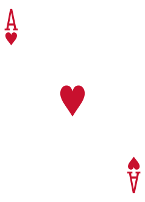
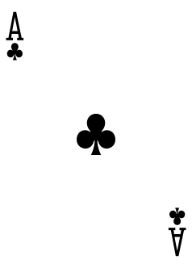
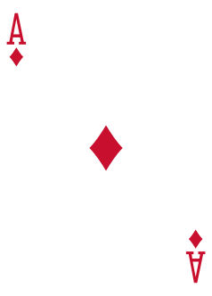

读懂落差体系
一套非线性的解牌方法:每张牌都由花色与数字两重含义叠合而成,而每一重含义,都同时藏着它的反面。从核心理念读起,到亲手解一张牌。
核心理念
落差体系是一套非线性的解牌方法。它不把牌排成"从弱到强"的直线,而是认为每一张牌、每一种花色,都能在同一时刻代表自身,也代表自身的反面——这就是叠加态。
所以读牌时,我们不问"这是好牌还是坏牌",而问"在此刻的语境里,它偏向哪一面"。同一份勇敢,可以是照亮众人的热忱,也可以是用力过猛、被人利用的莽撞。两者并非先后,而是同一个存在。
每张牌的含义由两条线索叠合:它的花色(心往何处),以及它的数字(处在第几层落差)。"落差"指的正是这十三层之间的高下与转化关系。读懂一张牌,就是读懂这两重含义如何在具体处境里相乘、显隐。
四花色
四种花色分作两类:♥ 红桃与♠ 黑桃是心之动——带有偏向、关乎意志;♣ 梅花与♦ 方块是客观存在——无偏向、关乎有无。四色相互嵌套、依存、转化,谁也离不开谁。

红桃
阳 · 心之动
黑桃
阴 · 心之动
梅花
阳(黑色)· 客观存在
方块
阴(红色)· 客观存在花色组合
花色不是孤立的。两种、三种花色同时出现,会嵌套、依存、转化出新的状态。下面是几组精选组合,读它们时,记得每一组也都带着自己的反面。
积极行动、勇于创造,不断进取拓展;一种生机勃勃、无尽生发的状态,生命力充沛。
摧毁性质的状态:汲取、抽离、分割、破坏;另一面,则是极致的承载与包容、深度挖掘。
偏向的极致:可正可负,甚至 360 度任意偏向,并可随意极化到不同程度。
整个世界乱套、无规则、卡死态——没有边界、大小、范围,所有东西混乱地堆叠卡在一起。
数字层次 1–K
数字给牌定下"在第几层"。从 A 到 K,是一道十三层的落差。人类真正活动的区间是 3 到 9;往下是起始的意识,往上是超脱人类的圆满与权位。
解牌方法
解一张牌,先把它拆成两重:花色面继承花色的性格,数字面继承层次的含义。两者相乘,就是这张牌的合成。多张牌同现时,若命中精选组合,便读组合的含义;未收录,则按语境自行解读。
别忘了叠加态:得到合成含义后,还要问一句"此刻偏向显义还是隐义"。同一张牌,优势与劣势是同一份特质的两面。下面用红桃三走一遍。

红桃三 ♥3
花色面 · 红桃(阳·心之动)——积极、爱心、勇敢、生命力。
数字面 · 3 号(人类基础复合层级)——最基本的人类,开始叠加多种面相。
合成 · 一个充满爱心、积极勇敢的基础人类。优势是爱心积极勇敢;换个语境,劣势也是爱心积极勇敢。
翻开红桃三单卡页 →